IT1215 · Professional Skills · Year 2 · Semester 2
Rakash
Pradeep
Kumar
Building the skills, confidence and professional mindset required to move from university into the IT industry.
Contents
AAbout me
Who I am
An IT student developing technical and professional skills side by side.
Where I am now
Year 2 of my Higher Diploma, building communication, teamwork and workplace skills alongside my studies.
Where I want to go
A first IT role, then specialisation in software, cybersecurity, IT operations or systems.
BMy skills
Self-assessed levels, not official qualifications. Edit the values in the HTML.
CWeekly journal
Nine weeks and the group project, each with the key content, evidence slots and my reflection.
Introduction to Professional Skills
Knowledge alone is not enough at work. The skills we build around it set us apart.
Three types of skills
Technical skills
Measurable, teachable abilities tied to a job or tool: Microsoft Excel, networking, data analysis, Java programming, project management. They often get you the interview, not necessarily the job.
Soft skills
How we collaborate, persuade and lead: negotiation, communication, customer service, leadership, critical thinking, public speaking.
Transferable skills
Useful in almost any role: problem solving, time management, teamwork, decision making, adaptability.
The Johari Window (Luft and Ingham, 1955)
This week helped me understand that having technical knowledge alone is not enough to succeed in my academic and professional life. As a Computer Science student, I realised that communication, teamwork, problem-solving and adaptability are equally important alongside technical skills. Learning about the Johari Window made me think about how I see myself and how others perceive me. I understood that there may be strengths and weaknesses that I am not fully aware of, and that receiving honest feedback can help me improve. Moving forward, I want to develop my soft and transferable skills, become more confident in communicating with others and use feedback as an opportunity for personal growth.
Portfolio Writing and the Paper Craft Challenge
A portfolio shows evidence and reflection, not just a list of claims.
Types of portfolios
Personal
Interests, achievements and growth over time, used for self-reflection.
Career
Skills, experience, training and goals for career planning.
Employment
Built for one job: CV, cover letter, references, work samples.
Assessment
Evidence of learning judged against set outcomes. This site is one.
The Paper Craft Challenge
The team had to build something innovative from only old newspapers, scissors and tape within a limited time. It showed that creative ideas plus collaboration produce strong results under limits.
During the Paper Craft Challenge, I was part of a team of 10 members. Our task was to create something innovative using old newspapers, scissors and cellotape within a limited time. I contributed by folding newspapers and cutting cellotape to help create both the cup and saucer and the gift bag. I also shared ideas and supported my teammates throughout the activity to complete the creations on time.
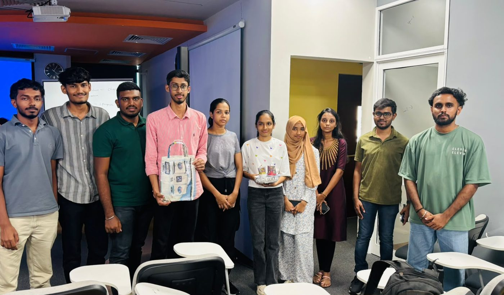
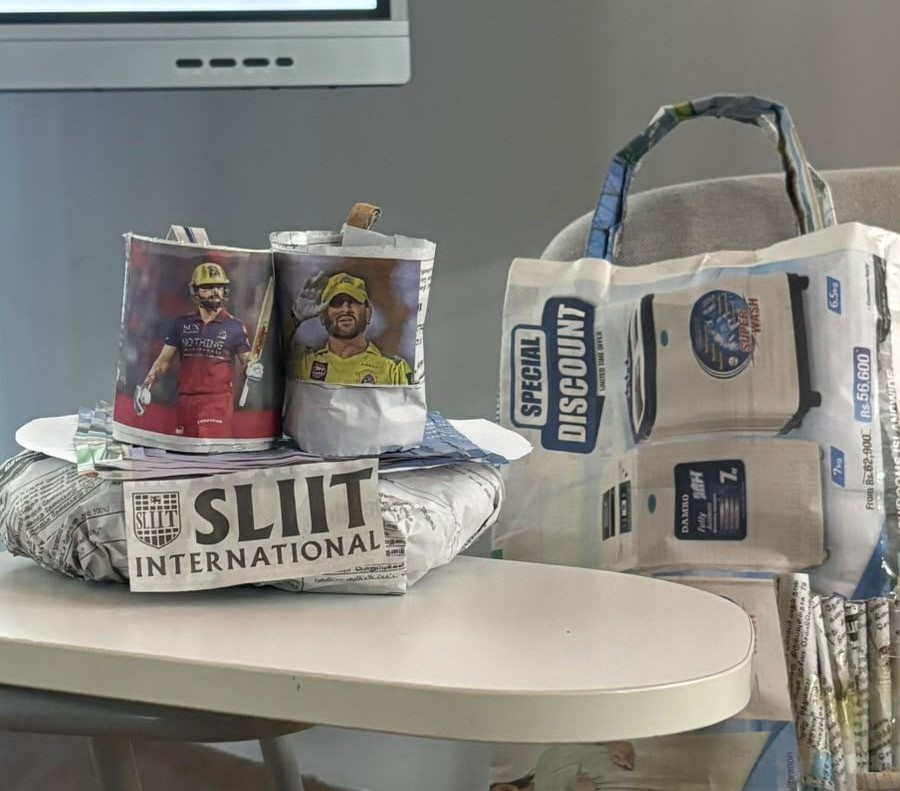
This activity taught me the importance of teamwork, creativity and time management. I realised that even small contributions can make a difference when working towards a common goal. Although we had limited materials and time, we managed to complete two creative items through cooperation and sharing ideas. It also helped me understand the importance of being flexible and supporting others rather than focusing only on individual responsibilities. In the future, I want to become more confident in sharing ideas and taking initiative when working in a team.
Interview Skills
An interview is a structured conversation where an employer assesses skills, attitude and fit.
Communication at an interview
Non-verbal
Body language, eye contact, posture, expressions.
Listening
Understand each question before answering.
Responding
Clear, relevant, honest answers.
Questioning
Thoughtful questions about the role.
The 7 C's of effective communication
- Clear present it clearly
- Concise not long-winded
- Correct nothing misleading
- Complete all the information
- Concrete use examples
- Courteous polite always
- Confident a can-do tone
The STAR method
- SSituationBrief details
- TTargetWhat I wanted to achieve
- AActionWhat I did
- RResultWhat happened
Do
- Research the company and role
- Dress smartly
- Keep eye contact, sit well
- Answer with clear examples
- Thank and follow up
Don't
- Arrive late or unprepared
- Dress too casually
- Slouch, fidget or use your phone
- Give vague answers
- Lie or exaggerate
Attending the interview was a valuable experience that helped me understand my strengths and areas for improvement. At the beginning, I felt nervous and lacked confidence, but as the interview progressed, I became more comfortable and confident in answering the questions. I was happy to receive positive comments from the interviewers, which encouraged me and increased my confidence. This experience taught me that being prepared, communicating clearly and maintaining a positive attitude are important during an interview. I also realised that confidence develops through experience. Overall, this interview helped me overcome some of my nervousness and motivated me to face future professional opportunities with greater confidence.
CV Writing
A CV is a short, targeted marketing document, tailored to each employer.
Checklist for my CV
0 of 6 done
What a CV includes
| Section | What to write |
|---|---|
| Name and contact | Professional name, phone, email, address, LinkedIn, portfolio link |
| Summary / profile | 1 to 2 positive lines about you |
| Work experience | Only if you have it: freelancing, internship |
| Education | Highest qualification to lowest |
| Skills | Soft and technical skills |
| Projects | Name, tools, short description, year |
| Extracurricular, awards, research | Most recent first |
| References | Two unrelated referees |
ATS (Applicant Tracking System): software that scans CVs before a person reads them. Use the advert's keywords and a simple layout.
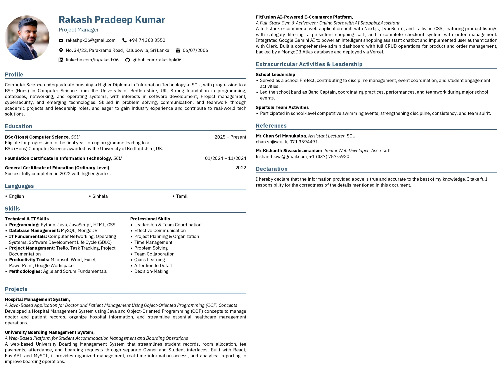
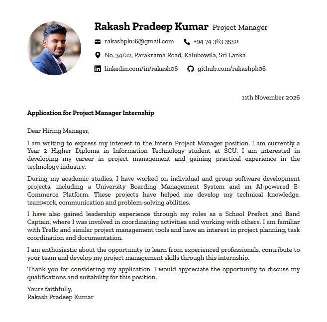
This week helped me understand the importance of creating a professional CV that effectively highlights my qualifications, skills and achievements. I realised that a CV is not just a document containing personal information but also an opportunity to create a positive first impression with potential employers. Learning about Applicant Tracking Systems (ATS) made me understand why using relevant keywords and maintaining a clear, organised layout are important. I also learned that a CV should be tailored to match the requirements of each job opportunity rather than using the same version for every application. Moving forward, I plan to keep my CV updated, highlight my academic projects and skills, and improve how I present myself to potential employers.
Emotional Intelligence
Noticing and managing emotions, in myself and in others.
The ability to monitor one's own and other people's emotions, to discriminate between them, and to use emotional information to guide thinking and behaviour.Salovey and Mayer, 1990
Goleman's five competencies
- 1Self-awarenessKnowing what I feel
- 2Self-regulationManaging reactions
- 3MotivationUsing emotions for goals
- 4EmpathyUnderstanding others
- 5Social skillsHandling relationships
Self-regulation strategies
Mindfulness
Paying attention on purpose, in the present moment, without judgement (Jon Kabat-Zinn).
Cognitive re-appraisal
Looking at the situation in a new way.
Acceptance
Accepting feelings without fighting them.
Problem solving
Acting on the cause of the emotion.
Emotional leakage: the unintentional showing of real feelings through face, voice or body language.
I believe handling pressure requires staying calm, managing my time and focusing on finding solutions rather than becoming overwhelmed. When I face challenges, especially during academic work and group projects, I try to prioritise tasks and complete them step by step. I also understand that feedback is an important part of personal and professional development. Instead of taking feedback negatively, I try to understand different perspectives, identify areas where I can improve and learn from my mistakes. I see both challenges and constructive feedback as opportunities to develop my confidence, improve my performance and become a better team member.
Building a Personal Brand
A personal brand is the perception people hold of me. I shape it or others will.
Six key points
Tell a story
Show who I am and where I am going.
Have structure
Be organised and recognisable.
Be consistent
Same message and style everywhere.
Be authentic
Stay true to myself.
Focus
A clear area, not everything.
Personalise
Specific to me and my audience.
Questions I ask myself
Am I building my brand, or are others?
I'm starting to build my personal brand through my behaviour, communication and actions.
What do I want said when I am not in the room?
I want people to describe me as friendly, respectful, reliable and helpful.
What must be true for them to say it?
I must be consistent, keep my promises, support others and treat everyone with respect.
LCD (Lowest Common Denominator): do not settle for generic, "good enough for everyone", because that is how a brand blends in.
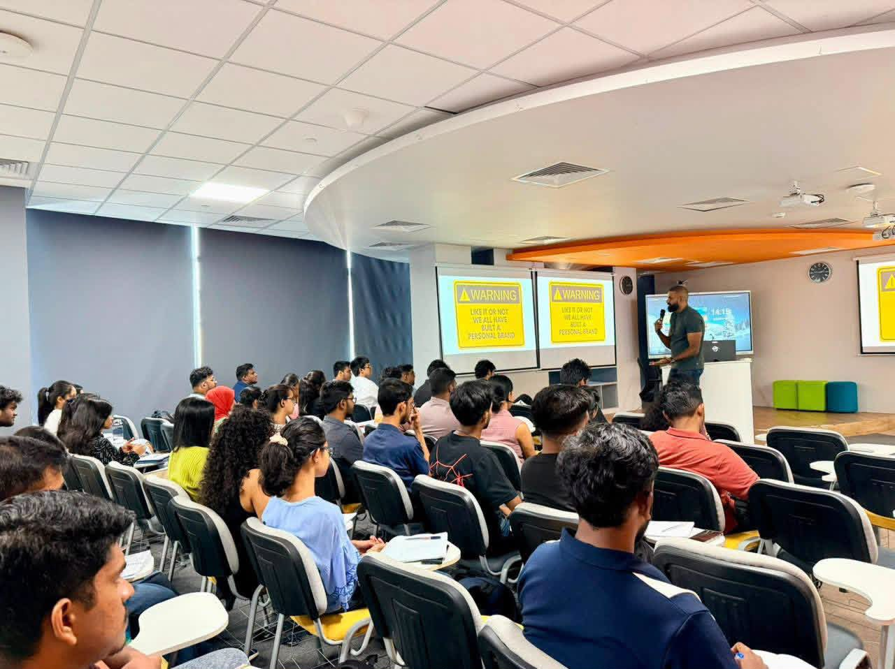
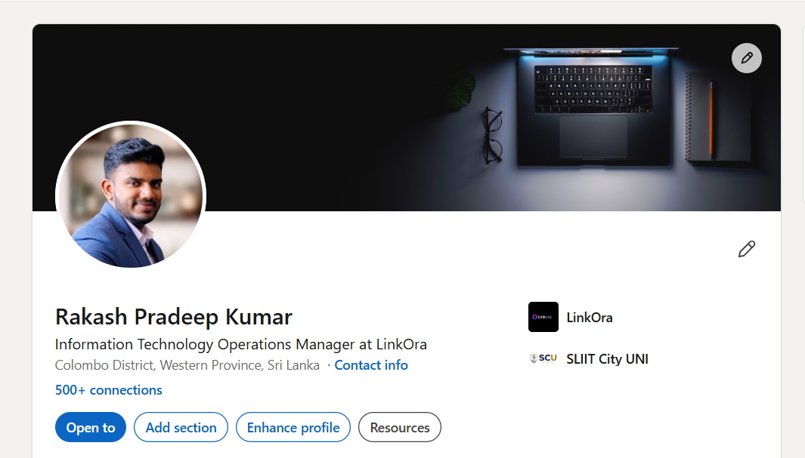
This week made me realise that my personal brand is shaped by how I behave, communicate and interact with others. I learned that building a strong personal brand requires consistency, authenticity and a clear understanding of how I want others to perceive me. I want to be known as a friendly, respectful, reliable and approachable person whom others enjoy working with. I also understood that my actions should reflect the image I want to build, both in person and on social media. Moving forward, I will focus on improving my professional image, maintaining positive relationships and presenting myself consistently in both academic and professional environments.
Professional Etiquette in Communication
The correct way to behave on the phone, by email and online.
Telephone: avoid and say instead
| Avoid | Say instead |
|---|---|
| "Hold on." | "May I put you on hold?" |
| "Who's calling?" | "May I say who is calling, please?" |
| "I can't hear you, speak up!" | "I am having a little difficulty hearing you. Can you please speak up?" |
| "I can't help you. Speak to someone else." | "I need to transfer your call so they can answer your question. May I do so?" |
| "Your problem" or "your complaint" | "Your question" or "your concern" |
Answer within 2 to 3 rings, ask before holding (check back every 30 to 45 seconds), explain transfers, record messages fully and close politely.
Email etiquette: seven rules
| Rule | Why |
|---|---|
| Subject and correct title | Shows what it is about and respect |
| No ALL CAPITALS | Reads as shouting |
| No confidential information | Accounts can be accessed by others |
| Careful with abbreviations | "LOL" or "IDK" are unprofessional |
| Think before you send | Relevance, offence, misreading |
| Proofread | Errors can cost a job |
| Do not forward unnecessarily | Forward only what adds value |
Social media: employers and universities check accounts. Build my brand and post carefully.
This week helped me understand the importance of maintaining professionalism when communicating through telephone calls, emails and social media. I realised that the way I communicate creates an impression on others and reflects my professional attitude. Learning about telephone and email etiquette taught me to use polite language, listen carefully, communicate clearly and pay attention to small details. I also understood the importance of maintaining a professional image on social media. Moving forward, I plan to apply these communication skills when interacting with lecturers, colleagues, employers and clients, especially in my future workplace.
The Office Survival Challenge
A group activity to develop professional communication, negotiation, teamwork, decision-making and problem-solving skills in a realistic workplace scenario.
The scenario
How it worked
- 1GroupsClass split into groups of 5 to 6
- 2HandoutsScenario and 15-item list
- 3Choose 7Discuss and justify each with a professional reason
- 4Answer sheetItems, reasons and member roles
- 5Time15 to 20 minutes
- 6PresentEach group shares its choices
Materials
- Printed scenario handout (one per group)
- Printed item list
- One answer sheet per group
- Pens
Example of a professional reason
- Laptop: communication
- First aid kit: health and safety
Roles in the group
- Leader
- Recorder
- Timekeeper
- Communicator
Skills practised
Communication
Explaining and justifying choices clearly to the group.
Negotiation
Agreeing on only 7 items from 15 by compromise.
Teamwork
Sharing roles and working within the time limit.
Decision-making
Prioritising under pressure and a fire risk.
Problem solving
Planning a safe exit and keeping contact with head office and clients.
This activity helped me understand the importance of teamwork, decision-making, communication and problem-solving in a professional workplace. Working under a 15-minute time limit required us to discuss our ideas, listen to different opinions and select the seven most essential items for the emergency situation. I realised that making decisions under pressure requires clear communication, cooperation and prioritising safety. It also taught me that every team member has an important role and that professional reasoning is necessary when making difficult choices. Overall, this activity improved my ability to think critically, work as part of a team and make responsible decisions in challenging situations.
Negotiation Skills
A structured process to reach an agreement that works for both sides.
Key concepts
BATNA
Best Alternative to a Negotiated Agreement. A strong one raises bargaining power.
Walk-away threshold
Where accepting is worse than my alternative.
Positions vs interests
A position is what someone wants; an interest is why.
Win-win
Options that meet both sides' key interests.
Concessions
Thoughtful ones, traded for something valuable.
Trust and verify
Build trust, check key facts.
Quick quiz
What does BATNA stand for?
Correct: Best Alternative to a Negotiated Agreement.
A manager says "This is our final salary offer." Most constructive response?
Discuss the whole package, not only the figure.
What can you do at a deadlock?
New options or a break can unlock progress.
Case studies
Salary negotiation
Amal earns LKR 120,000 and believes the market is LKR 140,000 to 160,000. Her manager offers LKR 130,000. Identify her interests, BATNA, evidence and a counteroffer.
Business negotiation
ABC Solutions wants a one-year software package. The supplier quotes LKR 2.4 million against a LKR 2 million budget. ABC values support, training and flexible payment, so a package deal is win-win.
This week helped me understand that successful negotiation is not about winning an argument but finding an agreement that benefits both sides. I learned the importance of preparation, active listening, understanding others' interests and knowing my alternatives before making decisions. Learning about BATNA and the walk-away point helped me understand how to negotiate with confidence. The salary and business case studies also showed me how to handle different situations and find win-win solutions. I realised that negotiation is one of the skills I need to improve, so I plan to practise expressing my opinions confidently, listening to others and finding solutions that maintain good relationships.
Group Project: Zoo Awareness Program
An educational event at the National Zoological Gardens, Dehiwala, on 17 October 2026, teaching visitors about wildlife conservation.
Facts come from the class notes. Confirm they match your team's records.
Timeline
- 30 JulInitial visit; told to submit a formal letter
- 11 AugMeeting with the Director
- 18 AugBriefing lecture at the zoo
- Aug to SepPlanned games, gift packs, jersey, banner, photo frame
- 7 OctFormal proposal submitted
- 13 OctOfficial approval
- 17 OctEvent day: 65 gift packs given out
Activities
Digital wildlife quiz
Ten questions by QR code; above 8 out of 10 earned a prize.
Food Chain game
Arrange picture cards in order.
Dos and Don'ts Zoo Adventure
Pick appropriate zoo behaviour.
Habitat matching
Match animals to habitats.
Photo frame
Explore, Protect, Coexist, #SCUWildFrame.
Banner and gifts
English, Sinhala and Tamil banner; 65 gift packs.
Outcomes
- All 65 gift packs went out quickly
- Visitors engaged and used the photo frame
- About 10 visitors tried the quiz
Lessons
- Plan for weather with a backup
- Prepare materials earlier
- Prepare more gift packs
- Keep approvals organised
Motto: "Every Life Has a Story" The Zoo Awareness Project was a collaborative initiative carried out by a team of 11 members as part of our Professional Skills coursework. The project aimed to promote wildlife awareness, encourage animal conservation, and create a meaningful experience for zoo visitors. Through our main initiative, #SCUWildFrame, we introduced an interactive activity that encouraged visitors, especially children and families, to participate and engage with our campaign. The project focused on spreading awareness, building public engagement, and creating a positive impact while developing our teamwork, leadership, communication, and project management skills.
My main responsibility was approaching visitors, communicating with parents and encouraging children to participate in our #SCUWildFrame photo activity. I explained the purpose of the activity, invited families to take photos using our specially designed frame and helped create awareness among visitors. I focused on making people feel comfortable and interested in joining the activity. This role helped me improve my communication skills, confidence and ability to interact with different people.
I participated in the project discussions, initial zoo visit, meeting with the Director and briefing lecture. These meetings helped us understand the requirements, obtain approval and plan the activities. I contributed to discussions about event preparation, games and arrangements for the program.
Our team worked together by sharing responsibilities, exchanging ideas and supporting each other throughout the project. We faced challenges such as limited preparation time and unexpected rainy weather, but we cooperated to complete the arrangements. By communicating and helping one another, we successfully conducted the Zoo Awareness Program.
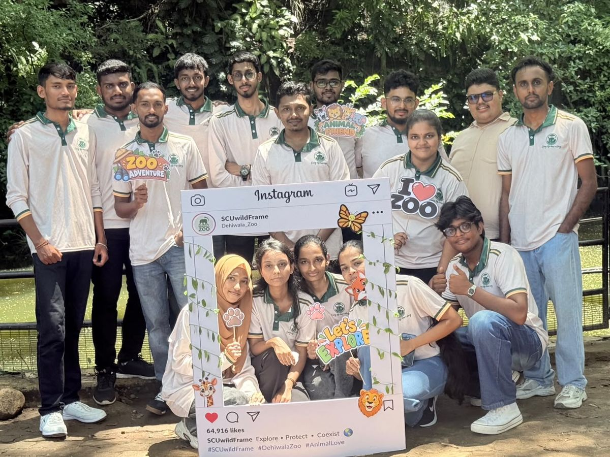

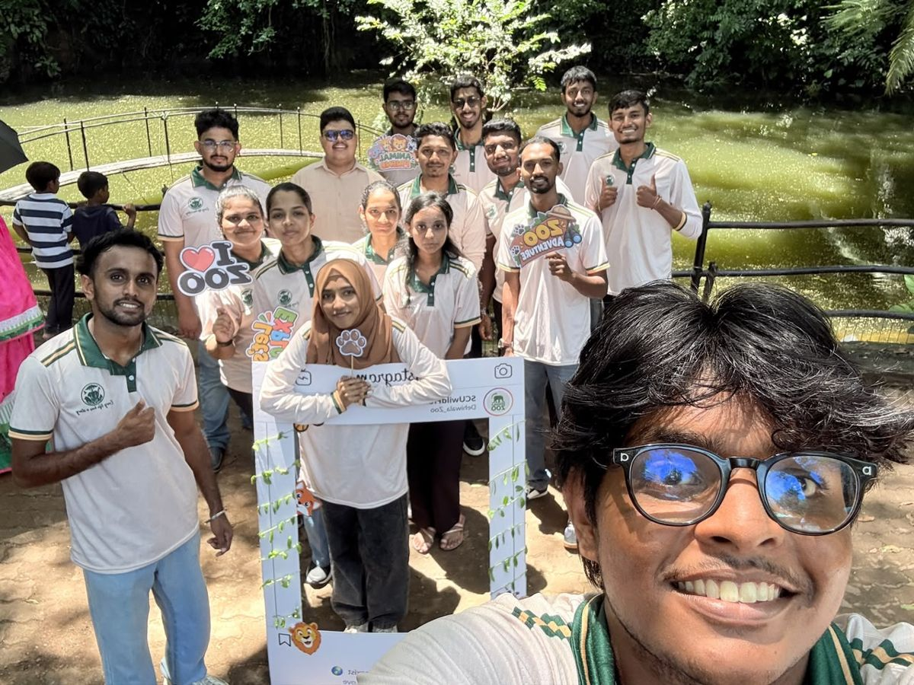
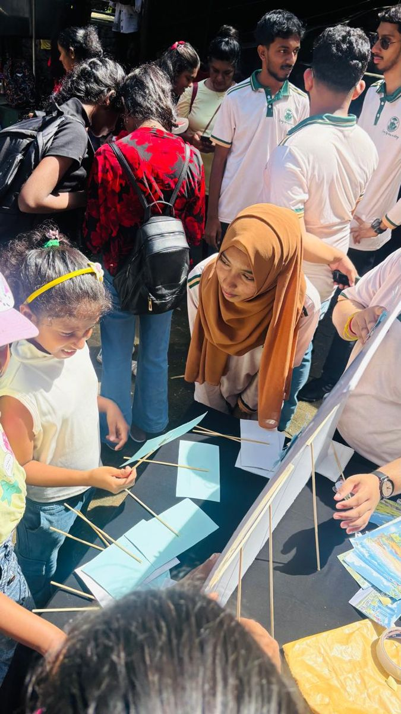
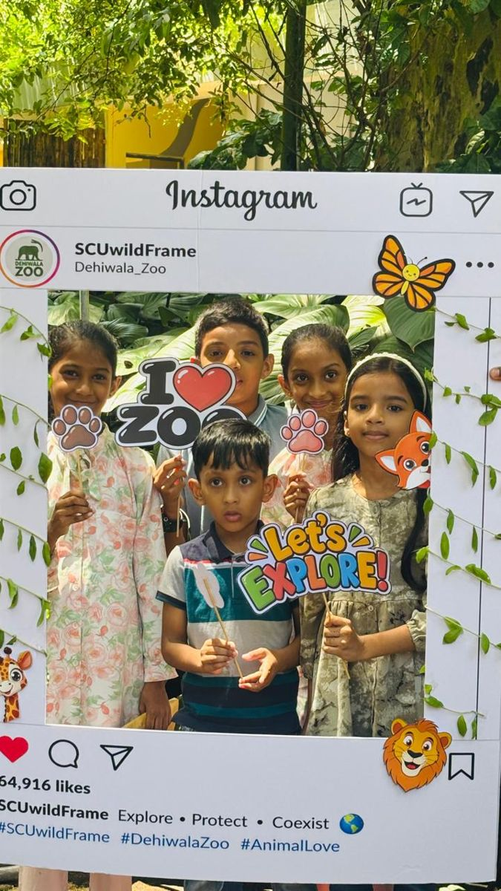
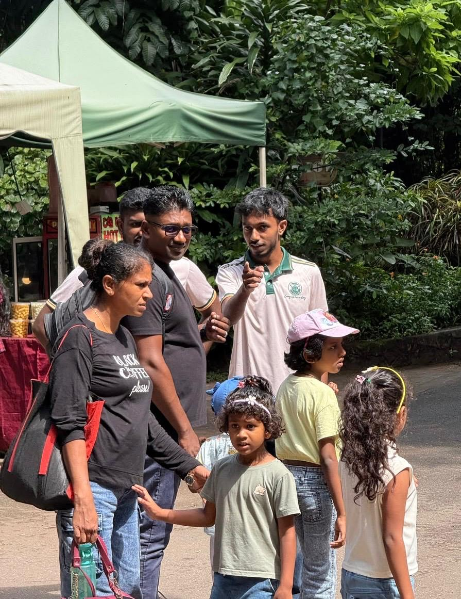
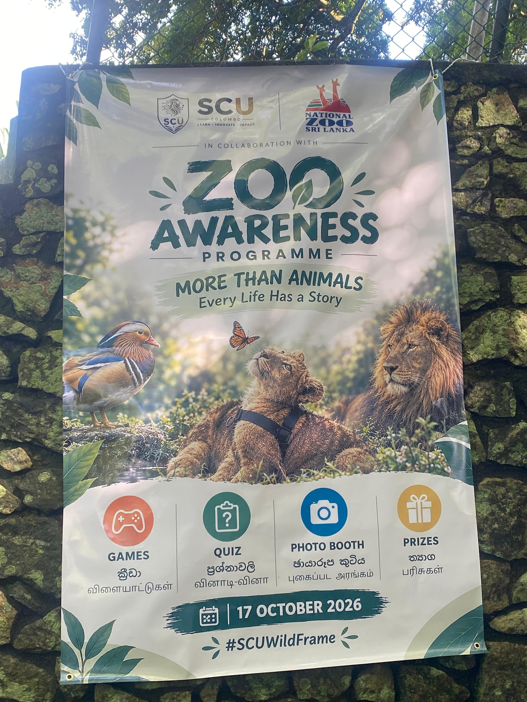
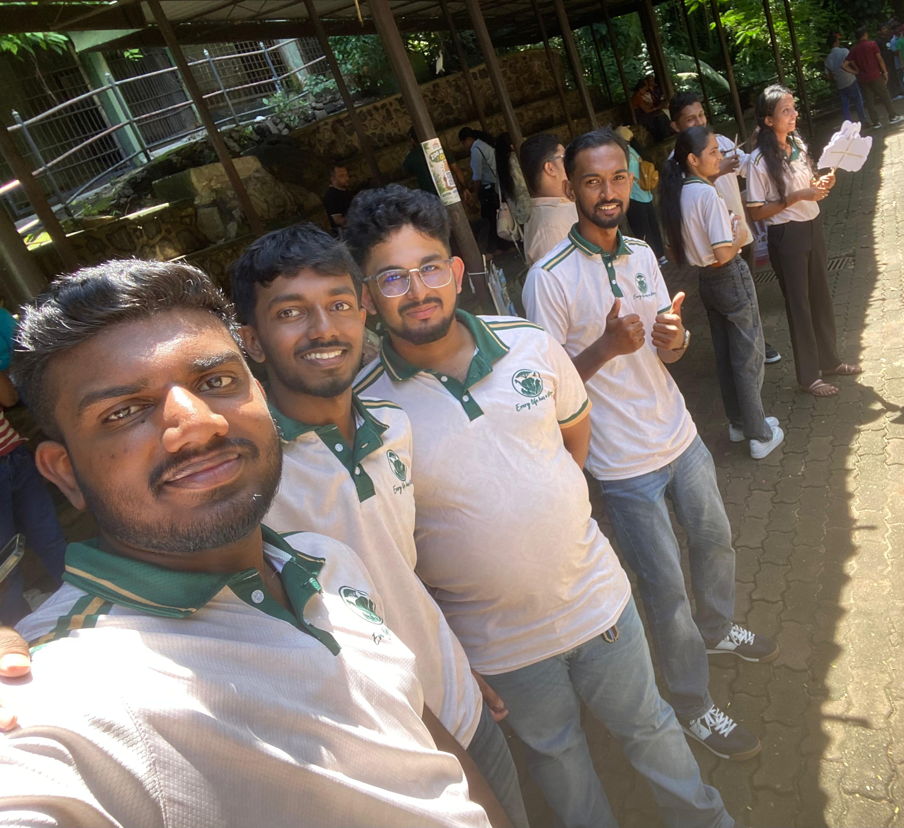
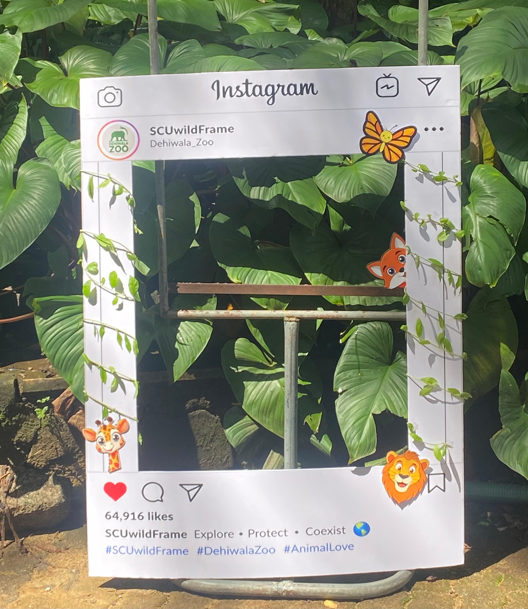
DPersonal development
Strengths
- Good communication and interpersonal skills.
- Adaptability and willingness to learn new things.
- Teamwork and problem-solving skills.
Weaknesses
- Sometimes I overthink before making decisions.
- I occasionally lack confidence when speaking in front of new people.
- I sometimes focus too much on details, which takes extra time.
Opportunities
- Internships
- Online learning
- University networking
Threats
- Competitive job market
- Fast-changing technology
- Workload pressure
Building professional relationships
- Networking
- Industry events
- University connections
- Mentorship
ELearning outcome coverage
Looking back.
Moving forward.
What did I learn?
Technical skills alone aren’t enough. I learned how to prepare for interviews with the STAR method, write a tailored CV, communicate professionally by phone and email, and negotiate by preparing my alternatives (BATNA).
What changed about me?
I think more before I act. I pay more attention to how I communicate, how I present myself and how others see me, and I’m more aware of my emotions and my personal brand.
My strengths
I’m willing to learn, I work well in a team, and I take feedback on board. I’m also building clearer communication and professional awareness.
Still to improve
I want to build confidence in public speaking and interviews, practise negotiation more, and manage my time better.
Career impact
These skills will help me in interviews, in working with colleagues and clients, and in handling pressure and disagreements in an IT role.
Next steps
Update my CV and LinkedIn, practise STAR answers, seek an internship, ask for feedback regularly and keep developing both technical and professional skills.
Professional growth is not a destination. It is a continuous process of learning, adapting and improving.
GContact
rakashpk06@gmail.com
linkedin.com/in/rakash06
GitHub
github.com/rakashpk06